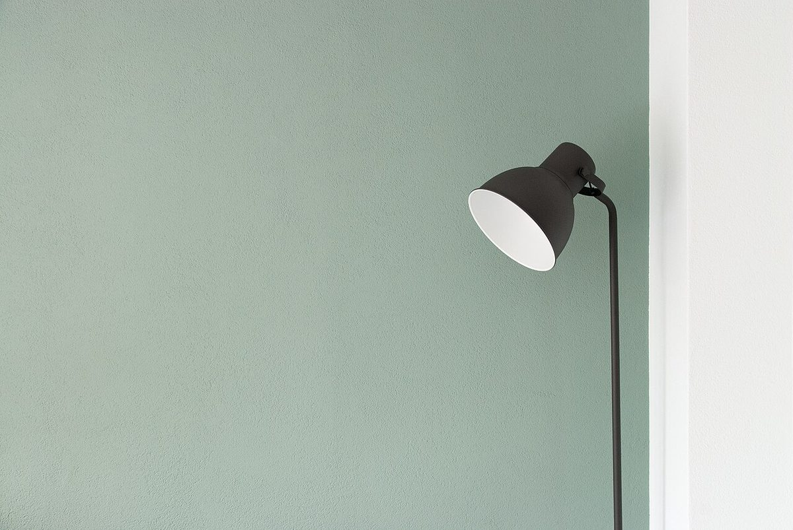
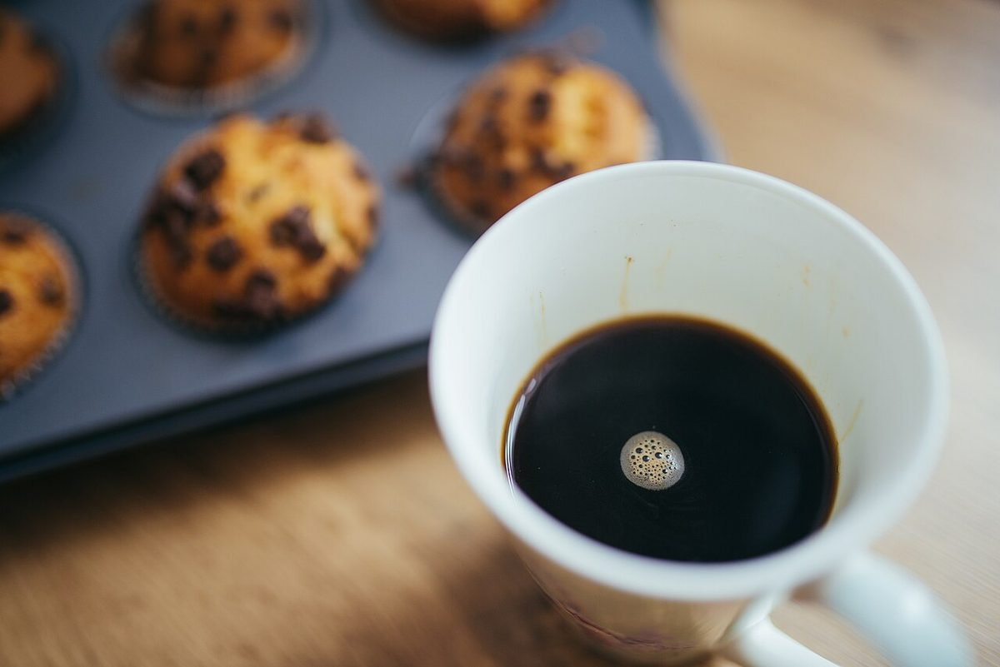

ABOUT
お店の由来・想い
店名の「りあん」は、フランス語の「lien(絆)」にちなむと紹介されています(個人ブログの訪問記より)。お店のInstagramのアカウント名も「lien」で始まっています。
ご紹介記事などによると、お店のこだわりは次のとおりです。
- オリジナルブレンドと、店主がすすめる「今月の一杯」(月替わり)
- 窓に向かうカウンター席があり、店主とお話しできる、お一人でも入りやすい雰囲気
- 朝のモーニングから、軽食、自家製スイーツまで
上記は公開されている紹介記事に基づく内容で、開業の経緯や店主の想いの詳細は確認できていません。「絆」というコンセプトは、店名の意味から制作側が描いたイメージです。



MENU
メニュー
紹介記事で触れられているメニューです。価格・内容・提供時間は変更されている場合があるため、すべて準備中としています。





VOICE
口コミ(イメージ例)
イメージ例
カウンターで飲んだコーヒーがおいしくて、ゆっくりできました。また寄りたいです。
イメージ例
朝のモーニングで一日が気持ちよく始まりました。落ち着いた雰囲気がよかったです。
イメージ例
手作りのケーキとコーヒーの組み合わせが好きです。お店の方との会話も楽しみのひとつです。
この口コミは制作側が作成したイメージ例で、実在のお客様の声ではありません。